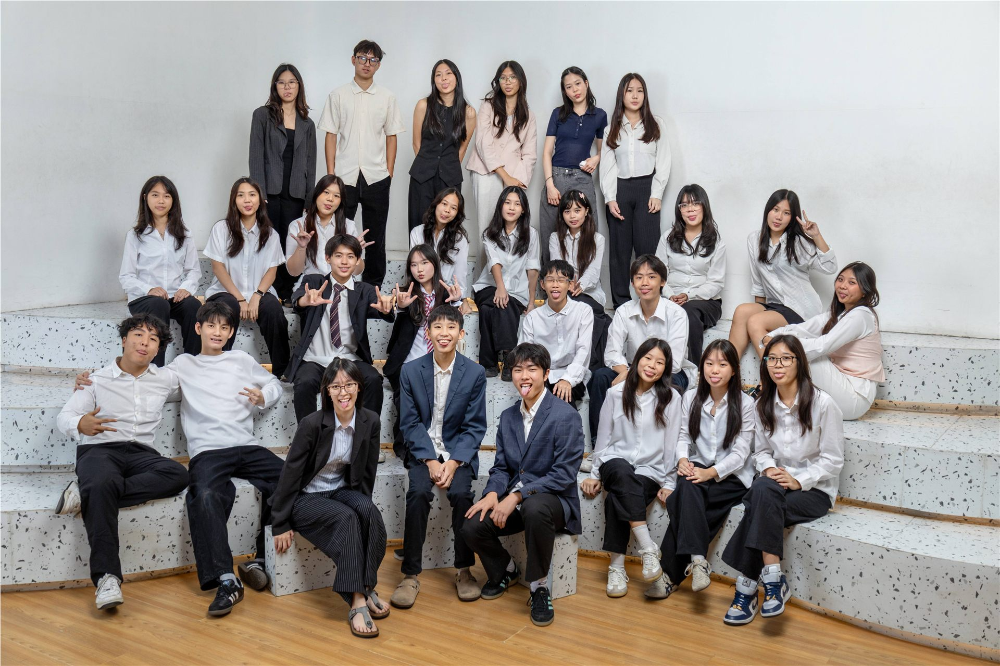
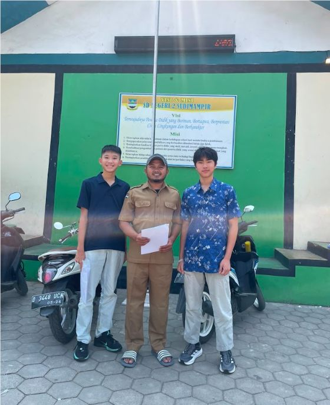
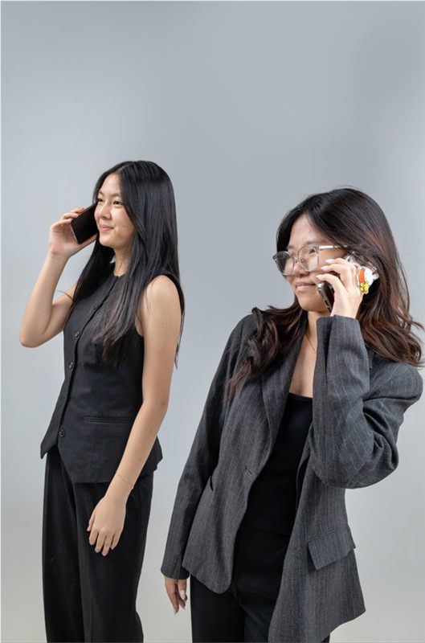

Photoshoot Pertama EcoBloom
Momen pertama hampir seluruh tim EcoBloom bertemu secara langsung, membangun kebersamaan, dan menjalani photoshoot bersama sebelum mengadakan pertemuan resmi.
SelengkapnyaBlooming a sustainable future.



Momen pertama hampir seluruh tim EcoBloom bertemu secara langsung, membangun kebersamaan, dan menjalani photoshoot bersama sebelum mengadakan pertemuan resmi.
Selengkapnya
Penandatanganan MoU dengan SDN 2 Sudimampir menjadi salah satu langkah awal EcoBloom dalam membuka kesempatan untuk mengadakan bootcamp di sekolah.
Selengkapnya
Kegiatan edukasi lingkungan bersama lebih dari 50 siswa SDN 2 Sudimampir melalui materi, quiz interaktif, dan praktik memilah sampah secara langsung.
Selengkapnya
Indonesia sering kali dipuja-puja di panggung internasional sebagai surga tropis yang kaya raya; sebuah zamrud khatulistiwa dengan hutan hujan lebat, dan lautan luas yang memukau mata wisatawan asing. Namun, balikkan lembaran brosur pariwisata yang indah itu, dan Anda akan langsung menghadap kenyataan yang jauh lebih kelam.
Hanya 10 menit dari rumah saya di Kota Baru Parahyangan (KBP), Jawa Barat, mengalir sebuah tragedi ekologis yang menyayat hati: Sungai Citarum, yang pernah dinobatkan sebagai sungai paling tercemar di muka bumi. Di sinilah mitos "Indonesia yang keren dan asri" runtuh seketika di hadapan tumpukan sampah plastik yang menggunung, air pekat berbau busuk, dan limbah industri Nusantara yang dibiarkan meracuni kehidupan jutaan warga lokal. Lebih dari 15 ribu ton sampah mencemari aliran sungai di jantung tanah air ini setiap harinya.Kedekatan krisis ini dengan kehidupan kita sehari-hari adalah sebuah tamparan keras. Setelah mendatangi daerah pedesaan di sekitar aliran sungai, kami menemukan bukti nyata di lapangan: di balik retorika pembangunan dan slogan hijau, ada kesenjangan edukasi serta literasi keberlanjutan yang diabaikan begitu saja oleh sistem.
Dari reruntuhan harapan inilah EcoBloom lahir, sebagai perlawanan dari anak-anak muda yang menolak tinggal diam. Di tengah kehancuran ekologis yang terpampang nyata di depan mata, generasi muda bukan sekadar penonton, melainkan garda terdepan yang menuntut perubahan. Saya bersama seluruh jajaran Tim Eksekutif dan Dewan Direksi mengapresiasi keberanian kalian yang memilih turun tangan. Namun, perjuangan ini tidak boleh berhenti pada seremoni atau program kerja semata. Kontribusi terbaik kita untuk bumi bukanlah sekadar mengikuti kegiatan EcoBloom, melainkan merombak total gaya hidup kita sehari-hari hingga menjadi cerminan nyata dari kepedulian itu.
"We are the first generation to feel the sting of climate change, and we are the last generation that can do something about it."
- Jay Inslee
“Bagi saya kegiatan ini sangat bermanfaat dan mengedukasi terkhusus bagi murid kelas 4, 5 dan 6 SDN 2 Sudimampir. Dalam kegiatannya EcoBloom menyampaikan materi dengan metode Gamifikasi Pembelajaran, games yang menarik membuat murid bisa menerima materi dengan rasa senang dan memahami dengan cepat. ”
- Rusli Permana · Guru PAIBP, SDN 2 Sudimampir
“...buat bootcamp ecobloom waktu itu seru banget!! jujur awalnya aku kira semua sampah itu sama aja dan langsung buang, tapi setelah ikut bootcamp aku jadi paham bedanya sampah organik, anorganik, dan b3... games nya juga seru banget, pas disuruh nebak jenis sampahnya masuk ke organik, anorganik, atau b3; kaka kaka nya juga jelasin materi nya dengan bahasa yang gampang dimengerti.”
- El · Murid, SDN 2 Sudimampir
“Testimoni 3 wow ecobloom is so cool they went to my school school is cool”
Nama pemberi testimoni · Peran / organisasi
Kami terbuka untuk bekerja sama dengan sekolah, komunitas, maupun perusahaan yang memiliki kepedulian terhadap lingkungan dan masa depan yang berkelanjutan. Mari bersama-sama menciptakan dampak positif melalui kolaborasi aksi nyata!
